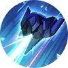
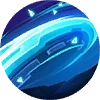

Beta, Advance! Damage Slowed
Each time Alpha uses a skill, he summons Beta and mark the target.
Beta will launch 3 laser strikes upon reaching 2 marks.
Beta's first two laser strikes each deal 50 (+70% Extra Physical ATK) True Damage and briefly reduce the target's Movement Speed, and the final AOE attack that deals 50 (+130% Extra Physical ATK) True Damage.| True DMG Skill | Deal True DMG to enemies. Triggers the higher one between Physical/Magic Lifesteal, combined with Spell Vamp. | | True Damage | If there is no way to reduce damage taken, you can try increasing Max HP. |
|
Passive
Rotary Impact AoE Slowed
Alpha launches and slash forwards, dealing 200 / 220 / 240 / 260 / 280 / 300 (+90% Extra Physical ATK) Physical Damage to the enemies along the way and slowing them by 40% for 1 seconds.
After the light wave is launched, Beta will follow its trace to strafe enemies, dealing 100 / 180 / 260 / 340 / 420 / 500 (+90% Extra Physical ATK) Physical Damage.| Physical Skill | Deal Physical DMG to enemies. It doesn't trigger Physical/Magic Lifesteal but triggers Spell Vamp. | | Movement Speed | Movement Speed on the battlefield. Usually Calculated and Actual Movement Speed is equal. But when Movement Speed is below 230 or over 420 both Slowdown and Speedup Effect will decay.
Calculated Movement Speed = Basic Movement Speed × (100% + All Speedup Effect% - All Slowdown Effect%). |
|
Skill 1

Force Swing AoE HEAL
After charging for a while, Alpha will strike forward in a fan-shaped area, dealing 250 / 300 / 350 / 400 / 450 / 500 (+100% Total Physical ATK) Physical Damage to enemies. Each hit restores 100 / 120 / 140 / 160 / 180 / 200 (+30% Extra Physical ATK) HP.
Then Beta scans the enemies within the area, dealing 125 / 135 / 145 / 155 / 165 / 175 (+30% Extra Physical ATK) Physical Damage.| Physical Skill | Deal Physical DMG to enemies. It doesn't trigger Physical/Magic Lifesteal but triggers Spell Vamp. | | Movement Speed | Movement Speed on the battlefield. Usually Calculated and Actual Movement Speed is equal. But when Movement Speed is below 230 or over 420 both Slowdown and Speedup Effect will decay.
Calculated Movement Speed = Basic Movement Speed × (100% + All Speedup Effect% - All Slowdown Effect%). | | ATK Speed | It determines the attacking times (capped at 3 times) per second.
Total current ATK Speed = Basic ATK Speed + Extra ATK Speed × ATK Speed Coefficient. |
|
Skill 2
Alpha, Charge! Blink CC
Alpha commands Beta to smash down at a set location, dealing 100 (+20% Extra Physical ATK) Physical Damage and inflicting stun for 1 second. At the first time Alpha flies over to the area and deals 50 / 75 / 100 (+20% Extra Physical ATK) Physical Damage to targets in his path, knocking the airborne toward his destination, and then smashing down to deal 200 (+80% Extra Physical ATK) Physical Damage and slow them by 40% for 1.5 seconds.
After Alpha smashes down, Beta launches 5 AOE strike(s) upon the target area, each dealing 25 (+60% Extra Physical ATK) Physical Damage| Blink | Penetrable movement. | | Stunned | A state that prevents a target from moving, attacking, or using skills. | | Airborne | A state that prevents a target from moving, attacking, or using skills. The target will fly into the air within the duration. |
|
Skill 3